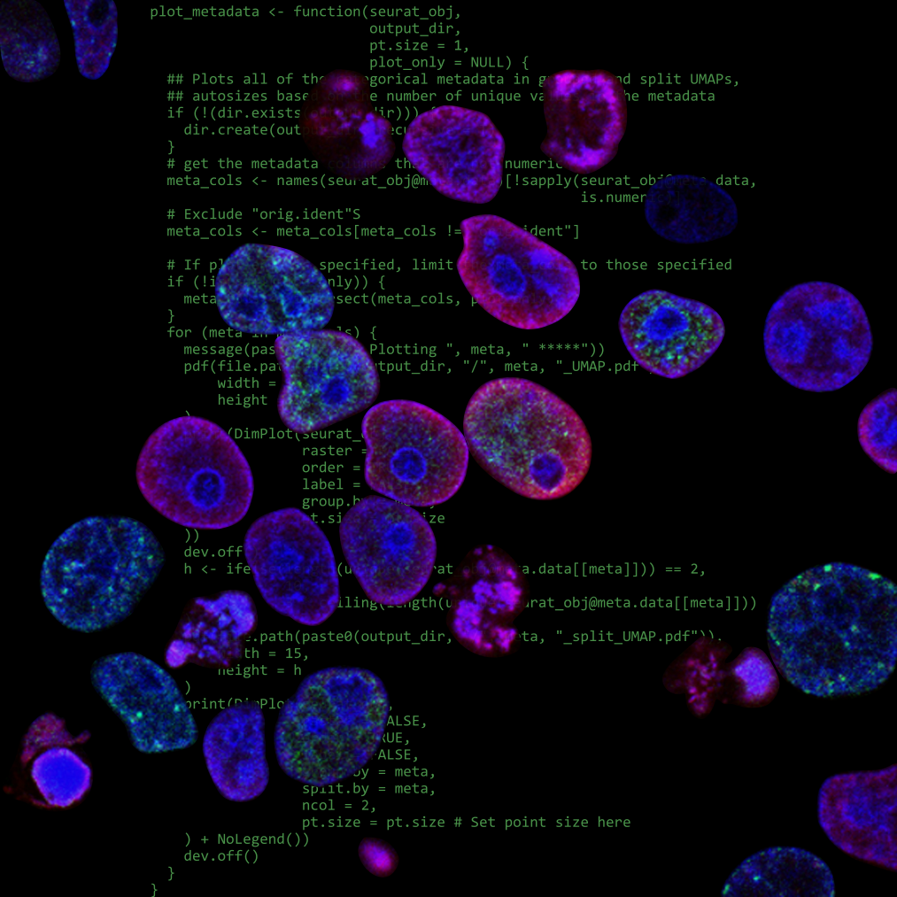

Welcome To My Blog
The first post in my new Quarto blog, where I will be sharing bioinformatics content.
Welcome! This is the first post in my new Quarto blog. I will be sharing bioinformatics content here, my goal is to make the tutorials and content I share as approachable as possible with an emphasis on developing practical skills.
